B2-018 — original tab attempt / proposed alternative
Finished index · Measured obstacle and decision brief
PENDING HEMANTH DECISION. Left is a fresh HTML reproduction of original QML tab geometry; right is the proposed conditional docking. Neither is a native app screenshot. Both use scale 1.3 and 24px illustrative top/bottom insets after the same first-tab action; each mode uses its own correct landing offset. Earlier fixed-scroll captures are preserved.
Saga · 412×900
Original source-geometry attempt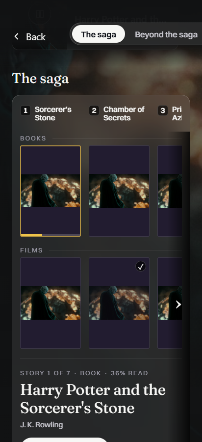
412×900 · 2026-11-01T00:03:53.857Z · SHA-256 a40c1acce978a5c128cd8c02fdc3e22b2e9f3a2ab6cf00dcd75ccd4ca421ba83
Capture metadata
saga-tabs-original-landing-portrait-stressProposed alternative — not approved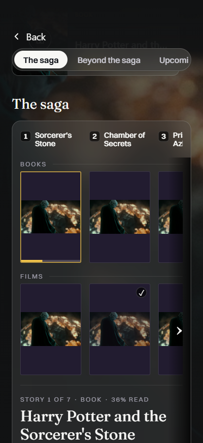
412×900 · 2026-11-01T00:03:56.304Z · SHA-256 9571a91a56ba3642baff9b208d6173e37d2e7647d85606dd59471f37276c22d9
Capture metadata
saga-tabs-proposed-landing-portrait-stress Saga · 354×792
Original source-geometry attempt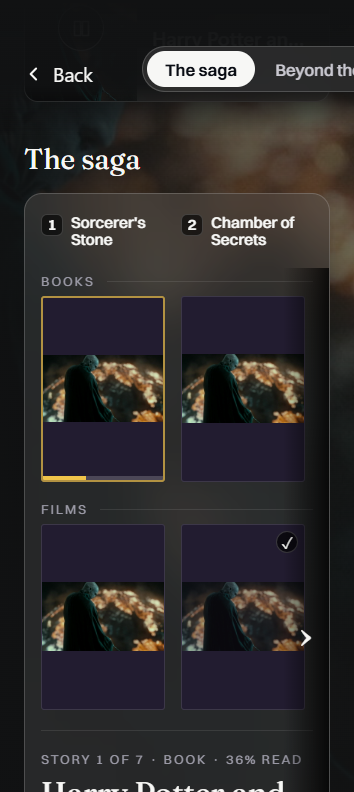
354×792 · 2026-11-01T00:03:57.873Z · SHA-256 d5a7b29a144a2ad08dccc713e5fc704695d735cbff66a0c6b3104bd4ed92f4d0
Capture metadata
saga-tabs-original-landing-portrait-small-stressProposed alternative — not approved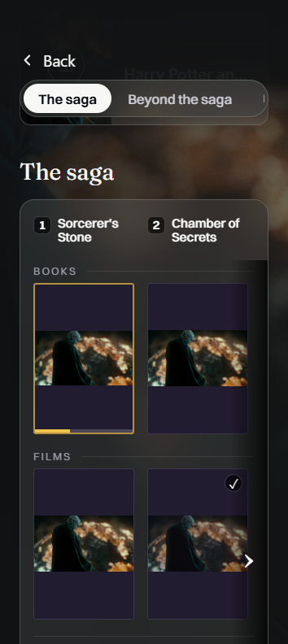
354×792 · 2026-11-01T00:03:59.311Z · SHA-256 46e20d1196d3e5ad1676acc5224ca0e2392322198e3605d3a2cbe88dd233310e
Capture metadata
saga-tabs-proposed-landing-portrait-small-stress Saga · 900×412
Original source-geometry attempt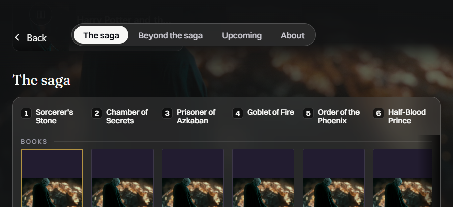
900×412 · 2026-11-01T00:04:00.895Z · SHA-256 262eafb5a62a4af9cf00691cf7951d6bd6c4e5ce189836d91e5ab012a3c4663d
Capture metadata
saga-tabs-original-landing-landscape-stressProposed alternative — not approved900×412 · 2026-11-01T00:04:02.437Z · SHA-256 8384bc363688ee311923396482f7ee3e3483ecc416dc7cee91d0607d477c1b1d
Capture metadata
saga-tabs-proposed-landing-landscape-stress Saga · 792×354
Original source-geometry attempt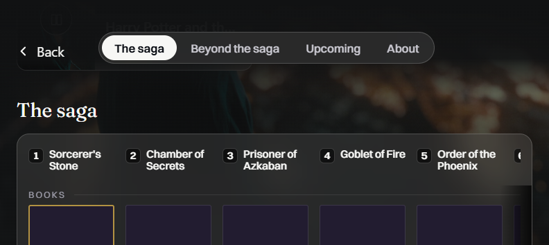
792×354 · 2026-11-01T00:04:03.904Z · SHA-256 9b07b79bdcff77109751bb8b333f20904cfbc2d5845edf2abb5bdc9e9818f508
Capture metadata
saga-tabs-original-landing-landscape-small-stressProposed alternative — not approved792×354 · 2026-11-01T00:04:05.466Z · SHA-256 9cdb363779ac7e570aee56c55d32cac90f507b07cba940a8452818ee9f2fd0fd
Capture metadata
saga-tabs-proposed-landing-landscape-small-stress Shelves · 412×900
Original source-geometry attempt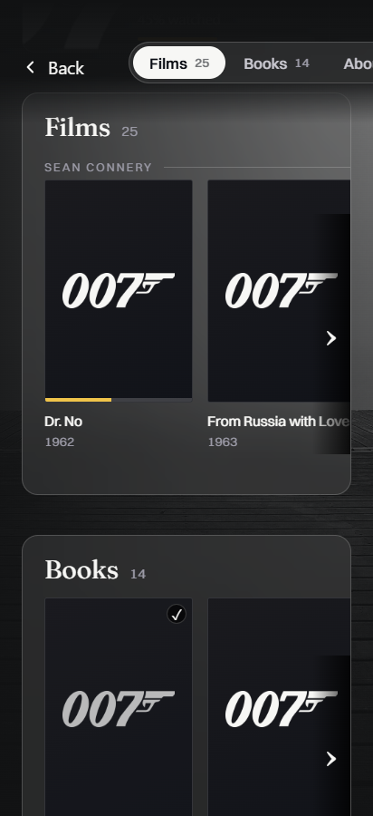
412×900 · 2026-11-01T00:05:36.187Z · SHA-256 f0f472af1dcfb350124703294a8b14215fb3b71ef591242bd19a73b24a41c465
Capture metadata
shelves-tabs-original-bond-landing-portrait-stressProposed alternative — not approved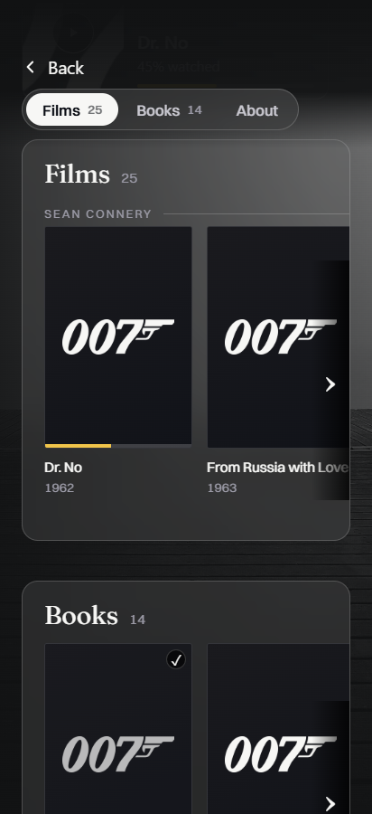
412×900 · 2026-11-01T00:05:37.619Z · SHA-256 8e0b8f7a48d3fd3f6e0d14e7c652338e661f59d61e06706084773ba9cc928460
Capture metadata
shelves-tabs-proposed-bond-landing-portrait-stress Shelves · 354×792
Original source-geometry attempt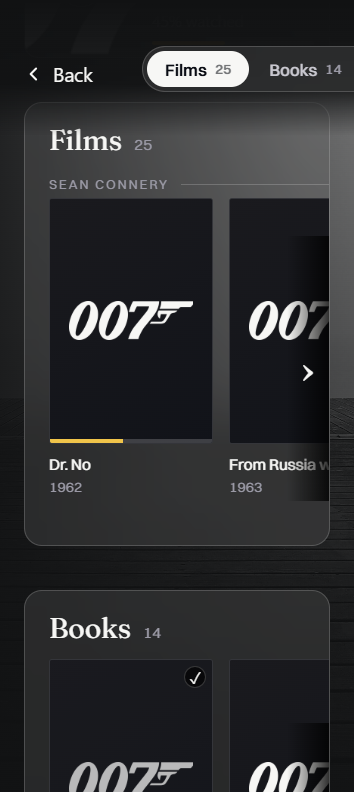
354×792 · 2026-11-01T00:05:39.162Z · SHA-256 34c554b1834c56c91997c354553ccfc91c29d3ca4587478ad5f7320251a21803
Capture metadata
shelves-tabs-original-bond-landing-portrait-small-stressProposed alternative — not approved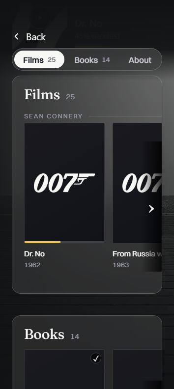
354×792 · 2026-11-01T00:05:40.644Z · SHA-256 c7069eb3e6918249a8ea410e47f77e6192a2b5d2dbfb40335fa3310fb1a50472
Capture metadata
shelves-tabs-proposed-bond-landing-portrait-small-stress Shelves · 900×412
Original source-geometry attempt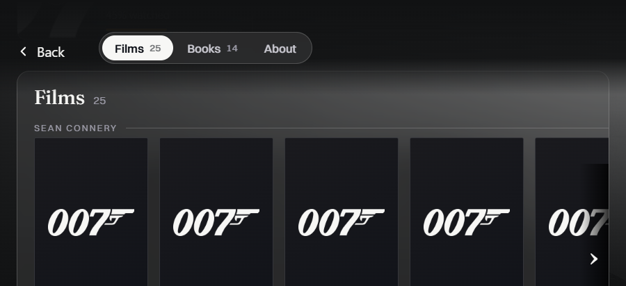
900×412 · 2026-11-01T00:05:41.922Z · SHA-256 5c3409f1a00831f4f6915e635845bf4a6b041dd5f39e8e537d2bc22a9392f1f2
Capture metadata
shelves-tabs-original-bond-landing-landscape-stressProposed alternative — not approved900×412 · 2026-11-01T00:05:43.218Z · SHA-256 095507713499f6e5440a285688835a44e95b9ca60cf04fc930d1b87485adba6f
Capture metadata
shelves-tabs-proposed-bond-landing-landscape-stress Shelves · 792×354
Original source-geometry attempt792×354 · 2026-11-01T00:05:44.703Z · SHA-256 9e49642e507d89e7a65f3b692bb45c68699a59867c781575f259083448ee7634
Capture metadata
shelves-tabs-original-bond-landing-landscape-small-stressProposed alternative — not approved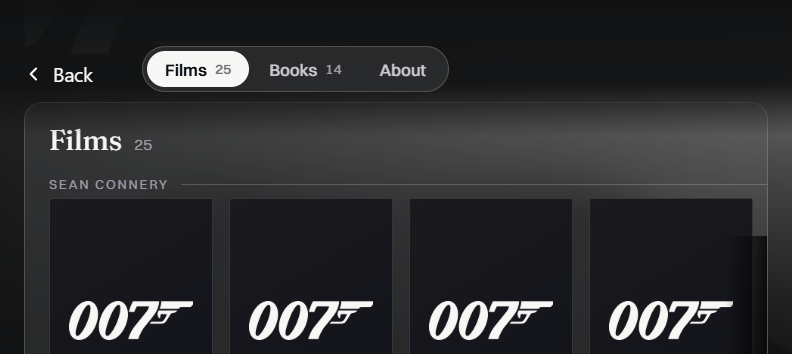
792×354 · 2026-11-01T00:05:46.069Z · SHA-256 39b7bcd4141aa84fdfa721d0fd9a9b347cc576bf4bebb4b21bd5e53ebdb06439
Capture metadata
shelves-tabs-proposed-bond-landing-landscape-small-stress